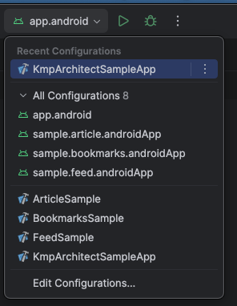
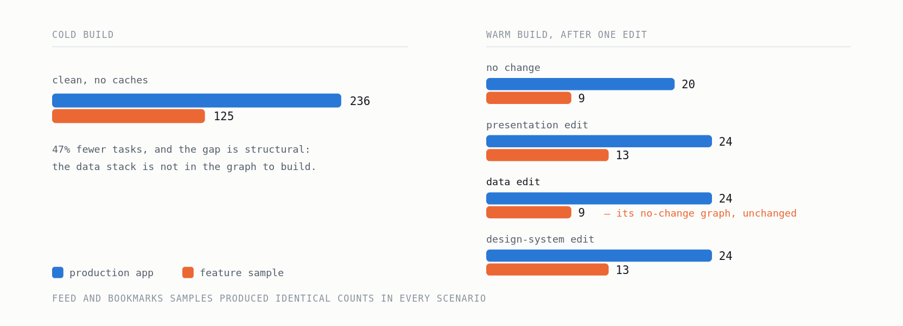
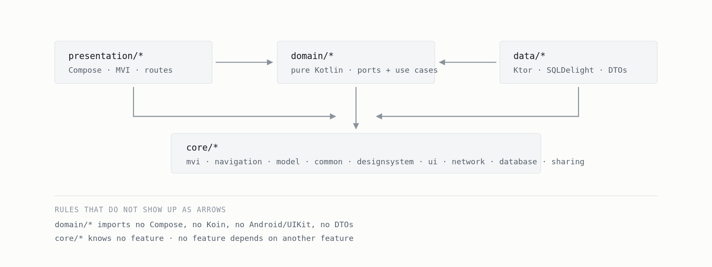
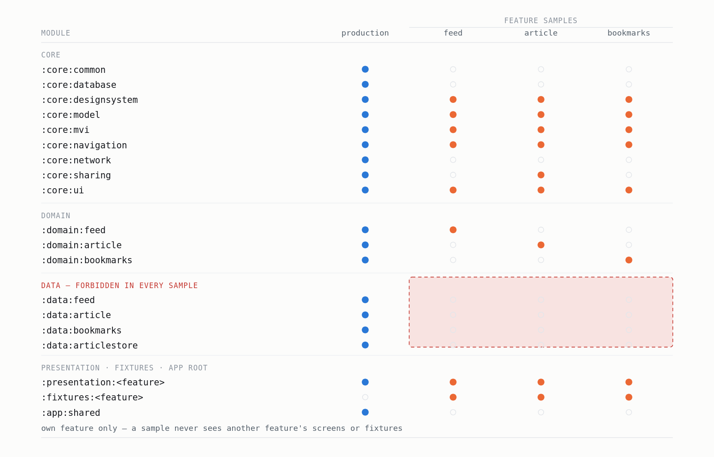
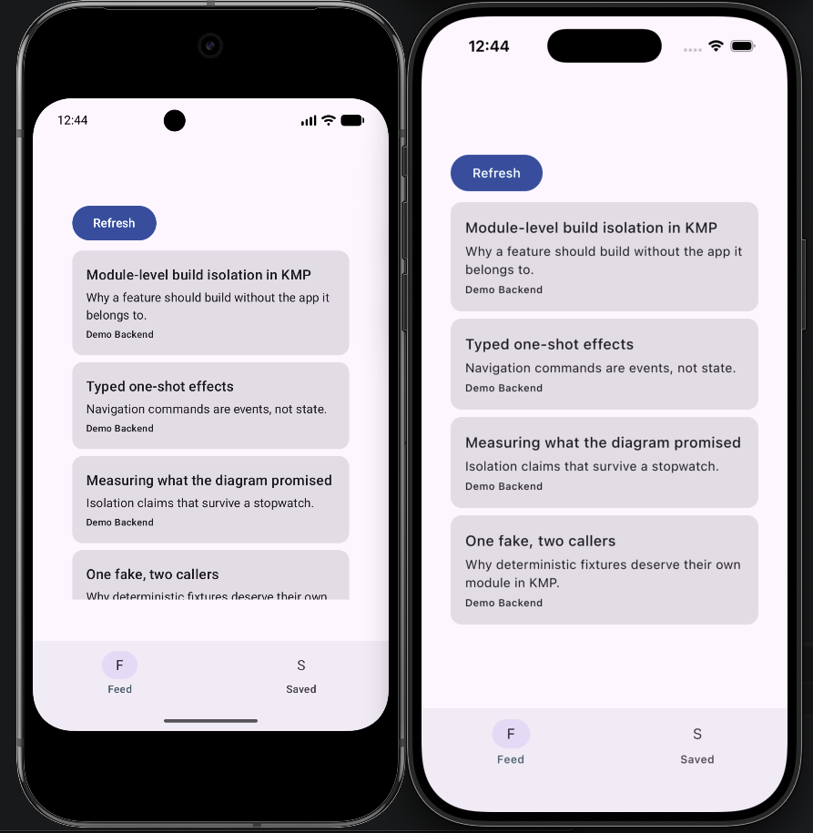
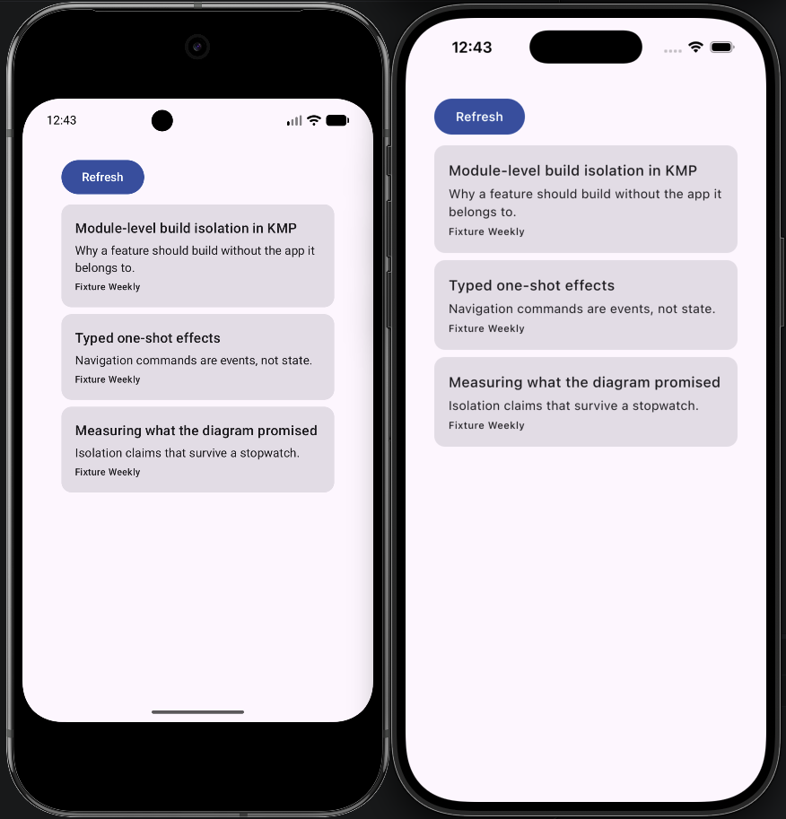

Part 1 of 3 · Kotlin Multiplatform
Your Feature Should Not Need Your App to Build
Build isolation as the goal, layering as the means — and the numbers that say whether it worked.
Modularization advice is about dependency direction. Draw the arrows the right way, business rules in the middle, framework at the edges.
None of it tells you what you bought.
Here is the question I wanted a number for: when a developer works on one feature, how much of the application do they build?
On most modular Android and KMP codebases the honest answer is all of it. The module graph is beautifully layered, and the run configuration still assembles an APK containing the network client, the database driver, three other features and whatever SDK someone added last quarter.
The layering was never wrong. It just wasn’t load-bearing for the thing that costs you time every day.
This series is about a KMP application built the other way round: build isolation is the goal, and layering is the means.
Where this comes from
The architecture was developed in a private codebase of 62 Gradle modules across 11 features. The public repository is a three-feature reference implementation extracted from it — small enough to read in an afternoon, complete enough to run the same gates on Android and iOS.
Every measurement below comes from the public repository, so all of it is reproducible. The design decisions come from the larger one, where getting them wrong was expensive.
github.com/kilcimurat/kmp-architect-sample-app — every code block in this series links to its source there.
The claim, with a stopwatch on it
An offline-first article reader: three features, Compose Multiplatform, Ktor syncing into a SQLDelight store. Every feature has its own runnable sample app — on both platforms. The daily loop is one command:
./gradlew :sample:feed:androidApp:installDebugOr, from the IDE:

sample.bookmarks.androidApp or BookmarksSample,
and never builds the other two features, the app root, or the data layer.
Editing a line and rebuilding, same machine, median of repeated runs:
Scenario Production app Feed sample Bookmarks sample
-------------------- -------------- ---------------- ----------------
cold build 236 tasks 125 125
no change 20 tasks 9 9
presentation edit 24 tasks 13 13
data edit 24 tasks 9 - unchanged 9 - unchanged
design-system edit 24 tasks 13 1302-benchmarks.md — method, host and raw repetitions

The highlighted row is the point. A change in the production data layer leaves both samples at their no-change graph. Nothing recompiles — not because the cache got lucky, but because those tasks are not in the graph at all.
Two samples are measured rather than one, on purpose. One hand-picked sample tells you a number exists; two independent ones tell you it repeats.
Task count is the portable signal. Wall time is machine-specific and I report it without dressing it up: in one warm scenario the sample ran half the tasks and finished slower than production. That row is in the repository and it stays there. The defensible claim is not “everything is faster” — it is the build scope is smaller, and something enforces that it stays smaller.
One rule produces all of it
sample → datais forbidden.
That is the load-bearing rule. Everything else in the topology is downstream of it.
It keeps Ktor, SQLDelight, the JSON parser and DTO mapping out of the loop you run forty times a day.

app/shared sees everything, a sample sees the
presentation, domain and fixtures of one feature — and nothing else.
DATA band across: four modules, present in
production, absent from all three samples — and with them Ktor, SQLDelight and the JSON parser.And it has a second-order effect that matters more than the build time. A sample cannot bind a real repository, so it must bind something else — a deterministic fixture. Every feature ends up with a working, offline, reproducible development environment whether anyone planned for it or not.
Two supporting rules do the rest:
- No feature depends on another feature. Cross-feature decisions belong to the app root alone.
implementationby default. Everyapiedge re-exports its target, so an ABI change there recompiles every consumer. Allowed — but each one is recorded in a file, with a reason.
What a sample actually is
Not a demo app. A composition root plus a NavHost — the only place in the feature’s world where “which implementation is live” gets decided.
fun sampleFeedModules(): List<Module> = listOf(
module {
single<FeedRepository> {
FakeFeedRepository(
initialArticles = FeedFixtures.articles,
refreshResults = listOf(Refreshed, Offline, Failed(RemoteUnavailable)),
)
}
factory { ObserveFeed(get()) }
factory { RefreshFeed(get()) }
},
feedPresentationModule,
)
Three selections: the feature’s presentation module, its use cases, fixtures for its ports. No
data, no app root, no other feature.
The scripted refreshResults list is small and pays well. The sample walks every branch of
the refresh banner in a fixed order — success, offline, failure — so anyone can see the error states
without unplugging their network. Randomness would have been easier to write and useless to demo
against.
Fixtures live in their own module and are consumed by exactly two callers: that feature’s tests and its sample. Written once, not two fakes that drift apart over a year.
The difference is visible without reading a single line of the build:

Feed / Saved tab bar.
Same presentation code in both. The tab bar is missing from the sample because a shared navigation
surface is a cross-feature decision, and the only module entitled to make one is app/shared
— which is not on the sample’s graph. The article list is different because the repository behind it is.
That is the whole architecture, in two screenshots.
The interesting part: the edge of the sample
The feed screen opens articles. The article feature is deliberately outside the feed sample’s graph.
So what happens when you tap?
Two obvious answers, both wrong. Swallow the effect and you hide a broken flow. Import the article feature and you destroy the isolation the sample exists to provide.
The third answer:
@Serializable
internal data class SampleOpenArticleRoute(val articleId: String)
feedGraph(onOpenArticle = { id -> navController.navigate(SampleOpenArticleRoute(id.value)) })
composable<SampleOpenArticleRoute> {
MessageSurface(
title = "Outside this sample",
body = "Production opens the article feature. It is not part of this sample's graph.",
actionLabel = "Back",
onAction = { navController.popBackStack() },
)
}A typed, sample-local destination that names the request and supports back navigation. The isolation boundary becomes something you can see and tap.
Notice what did not change to make that work. The ViewModel emits
FeedEffect.OpenArticle(id) and has no idea what happens next; the route graph takes an
onOpenArticle parameter. Production binds it to the article feature, the sample to a
placeholder. Part 3 is about that seam.
What isolation does not fix
Three limits, measured rather than argued away:
- Configuration time gets worse, not better. More modules cost more configuration. It is skipped on a configuration-cache hit, which is why it stays out of the daily loop — but the split does not help it.
- A shared design-system change still recompiles the tree. That row is 13 tasks, not 9. If your most frequent edit is in shared UI, this topology moves your number less than the table suggests.
- A sample never exercises a real repository. A renamed DTO field, a SQL statement that only fails on API 24 — none of it surfaces in the fast loop. It surfaces in the data module’s own tests and in the production build. That is the price of the rule, and it should be paid deliberately.
When not to do this
- A single-feature app. Nothing to isolate; you’d pay the module tax for one graph.
- A team of two or three. The problem this solves is a several-teams-one-repo problem.
- When nobody will maintain the gates. A rule no machine enforces decays into a comment.
The cost side of the ledger: two composition roots per feature, a fixtures module per feature, and a build-logic project with its own tests. In the reference that is 30 Gradle projects for three screens, which is plainly a lot of structure for what it renders — the reference exists to be read. The structure earns its keep at the size it was written for: around a dozen features, several people editing several of them at once.
Next
That table is worth nothing if the property it measures can quietly regress. Someone adds one convenient dependency, the graph grows, and the number goes back to where it was before anyone notices.
That is not a code-review problem. It is a build-verification problem, and it is what Part 2 is about: two Gradle gates, one reading declared edges, one resolving the actual classpath of every sample on both Android and iOS — because a static iOS framework links a leaked data module exactly as happily as an APK packages it.
Part 3 covers the MVI layer and the source rules that turn its conventions into build failures.
github.com/kilcimurat/kmp-architect-sample-app — the two gate commands, the raw benchmark repetitions, and a validation report listing the seven failures found while proving all of this, with how each was fixed.